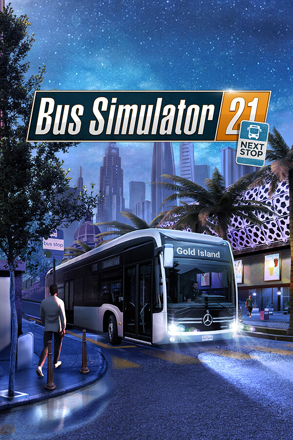

Bus Simulator 21 Next Stop
Bus Simulator 21 Next Stop
Detalhes
 |
|
| Tempo de jogo | Não Jogado |
| Última Atividade | Nunca |
| Adicionado | 07/06/2026 0:35:37 |
| Modificado | 07/06/2026 2:46:16 |
| Status de Conclusão | Not Played |
| Biblioteca | Epic |
| Fonte | Epic |
| Plataforma | PC (Windows) |
| Data de Lançamento | |
| Pontuação da Comunidade | 69 |
| Avaliação da crítica | |
| Pontuação do Usuário | |
| Gênero | Simulação |
| Desenvolvedor | stillalive studios |
| Editor | astragon Entertainment |
| Funções | Cartas Colecionáveis Compartilhamento Em Família Compat. Total Com Controle Conquistas Cooperativo Cooperativo On-Line Multijogador Nuvem Um Jogador |
| Links | Central da comunidade Discussões Guias Notícias Página na loja PCGamingWiki Conquistas |
| Tag | 3D Colorido Controle Cooperativo Cooperativo On-line Direção Gerenciamento Moderno Multijogador Mundo Aberto Para Toda a Família Personalização de Personagem Primeira Pessoa Realístico Relaxante Simulação Simulador Automobilístico Simulador Imersivo Terceira Pessoa Um Jogador |
Descrição

Não perca Bus Simulator 21 Next Stop e a frota mais completa e avançada da série. Bus Simulator 21 Next Stop disponibiliza a você uma frota de 30 ônibus oficialmente licenciados de famosas fabricantes internacionais, incluindo Alexander Dennis, Blue Bird, BYD, Grande West, IVECO BUS, MAN, Mercedes-Benz, Scania, Setra e Volvo. Você também terá acesso a ônibus elétricos e de dois andares pela primeira vez.

Prepare-se para o novo e impressionante mapa dos EUA, Angel Shores, e uma versão renovada do mapa europeu Seaside Valley da edição anterior do jogo, incluindo uma extensão de mapa. Também há diferentes níveis de dificuldade e modos de jogo para uma ampla gama de jogadores.

Em Bus Simulator 21 Next Stop, você pode usar mais recursos de gerenciamento, podendo criar cronogramas detalhados, comprar e vender ônibus, e planejar rotas eficientes. Prefere deixar a papelada de lado e assumir pessoalmente a direção dos seus ônibus? Os recursos automáticos de Bus Simulator 21 Next Stop podem assumir as funções de gerenciamento, dando liberdade aos motoristas dedicados.

Jogue no modo para um jogador ou no modo multijogador cooperativo, leve passageiros com segurança e prontidão para seus destinos e obtenha recompensas por dirigir em tempo hábil no fim do dia.

Desde o lançamento, Bus Simulator 21 também foi melhorado com a atualização Next Stop! Esta ampla atualização introduziu muitas melhorias e o modo Carreira a Bus Simulator 21 Next Stop. Esse modo combina o modo Sandbox com o sistema econômico da campanha.
Além da atualização Next Stop, também temos um DLC de expansão de mapa oficial e gratuito. Aproveite para conhecer uma nova área ao norte do mapa estadunidense Angel Shores.
Bus Simulator 21 Next Stop inclui cerca de 30 ônibus de famosas fabricantes internacionais.
Dois ambientes enormes e dinâmicos nos EUA e na Europa, com uma abordagem de mundo aberto ainda maior, farão você querer explorar os arredores.
Dirija por conta própria ou com colegas no modo multijogador cooperativo.
Recursos opcionais e refinados de gerenciamento, como a organização de cronogramas, visitas a concessionárias ou o planejamento de rotas eficientes.
Diferentes modos de jogo para uma ampla gama de jogadores.
Suporte para volantes populares, controles, rastreamento ocular Tobii Eye e TrackIR.
A atualização Next Stop introduz o inédito modo Carreira, além de numerosas correções de erros e melhorias na jogabilidade.
DLC gratuito de expansão de mapa, com muitas tarefas novas para donos do jogo principal. (Download separado)